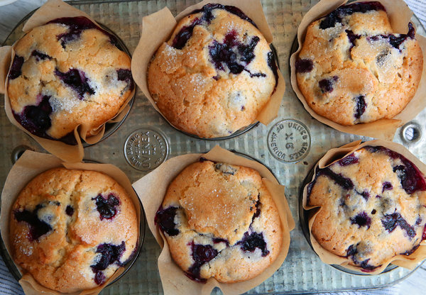

Blueberry Muffins
This is a quick and delicious recipe for morning muffins to enjoy with your second cup of coffee.

This recipe brings together fresh or frozen blueberries, nuts, spices, and is best enjoyed in bed watching a morning movie or your favorite news program!
Ingredients - Wet
- Brown Sugar, 1/4 cup
- Egg, lg, just one!
- Butter, 1/4 cup, melted
- Alt Milk, almond or oat
- Vanilla, 1/2 tsp
- Blueberries, to add at the very end, 1 cup
Ingredients - Dry
- Gluten Free Flour, Bob's Red Mill, 1 cup
- Rolled Oats, a small handfull, toss
- Pecans, crushed a bit, 1/2 cup
- Cinnamon, shake generously
- Nutmeg, sprinkle a bit
- Baking Powder, for rising up, 1 tbsp
Steps
Now that you have assembled the necessary ingredients, let's make the muffins!
- First, preheat your oven - 375 degrees
Next, let's mix the wet ingredients.
- Place the brown sugar in a small bowl.
- Add the melted butter and mix vigorously until the butter and sugar become one.
- Crack the egg into this mixture and whip it.
- Add the milk and vanilla and give it one last stir.
Ok, now let's mix the dry ingredients.
- Scoop the flour into a new bowl, larger than the bowl with the wet ingredients.
- Add the oats, crushed pecans, spices and baking powder and mix well.
- Mix so well that the mix is one, with no one ingredient separate from the rest.
Now, add your wet to dry ingredients and fold together.
- Side project - take some of the last of the melted butter from the bowl or pan you melted it in and apply this to your muffin tin.
- This way, you'll be ready to go right after adding the blueberries.
- Now the fun part - Add the Blueberries!
- The mix should get slightly purple and look chunky and thick.
You're ready to portion and bake. Almost there!
- Portion the mix equally into the six compartments.
- Place in the preheated oven for 20-25 minutes
- After time has elapsed, your kitchen should be filled with the pleasant anticipation and smell of muffins!
- Take the muffins out and remove them from the tin. Let cool.
Wait as long as you can, but definitely eat at least one while still warm. Enjoy!